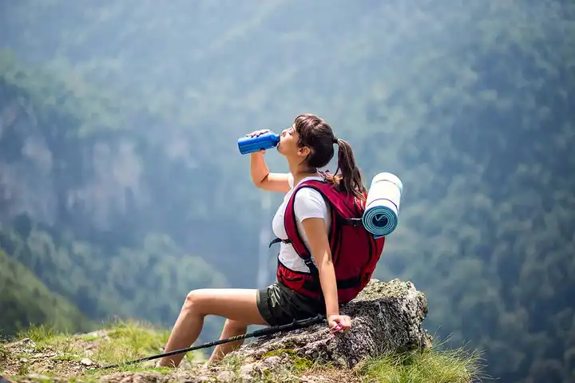

Гидрация в горах

Регулярное употребление воды помогает поддерживать выносливость и концентрацию на маршруте. Даже умеренное обезвоживание заметно ухудшает темп и восстановление.
Пейте небольшими порциями в течение дня, а не только на привалах. Удобные мягкие фляги или гидратор упрощают этот режим.
В холодных условиях важно следить, чтобы система питья не замерзала. Планируйте запас жидкости и способы пополнения заранее.
Перед выходом на маршрут полезно проверить состояние снаряжения дома: крепления, швы, регулировки и совместимость элементов между собой. Такая проверка снижает вероятность технических проблем уже в горах.
Финальный выбор всегда зависит от формата маршрута, сезона и личного опыта. Лучше ориентироваться на реальные условия и постепенно накапливать комплект, который проверен именно в вашей практике.